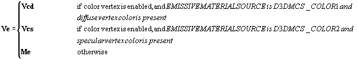
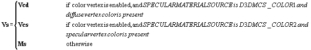

The following explains the formula for diffuse lighting.
The specular component is set to (0, 0, 0, 0) if D3DRENDERSTATE_SPECULARENABLE is set to FALSE; otherwise, it is computed as follows:
where

